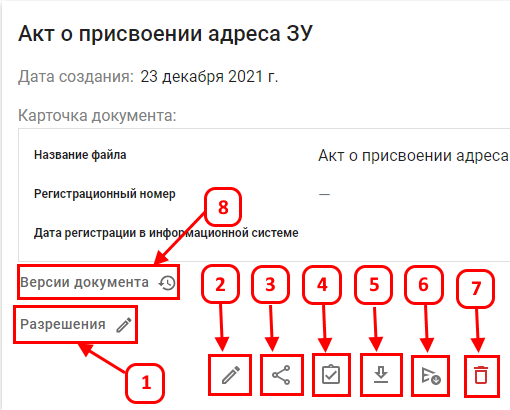

«Карточка документа» содержит информацию о документе:
Функционал карточки «Библиотеки документов»
- Разрешения — предоставление прав на документ.
- Редактирование документа — изменение, добавление новых данных для документа.
- Копировать ссылку — копирование ссылки на документ.
-
Зарегистрировать документ — заполнение регистрационного номера, даты регистрации и перевод документа в режим
чтения.
- Скачать — экспорт документа.
- Отправить в СЭД "Диалог" — отправка документа в систему электронного документооборота.
- Удалить — удаление документа.
- Версии документа - окно со списком всех сохраненных версий документа.
